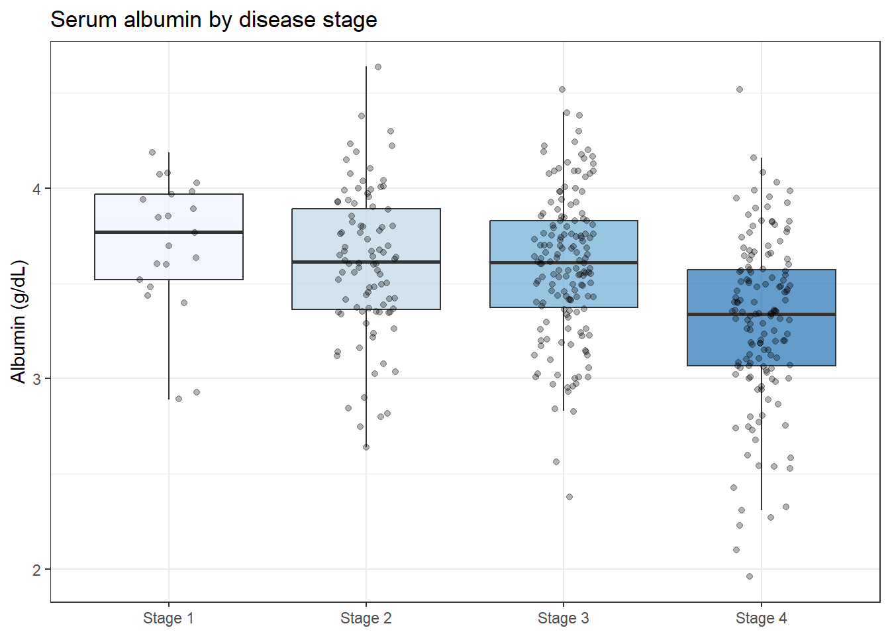
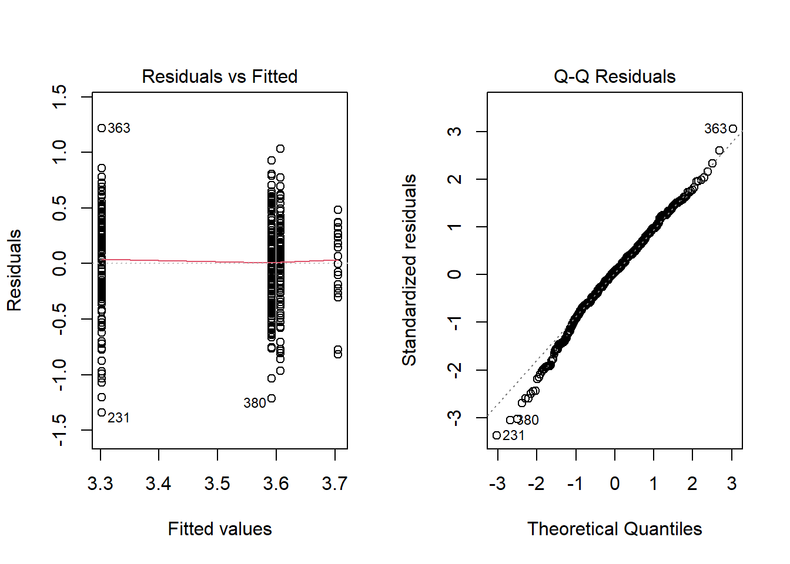
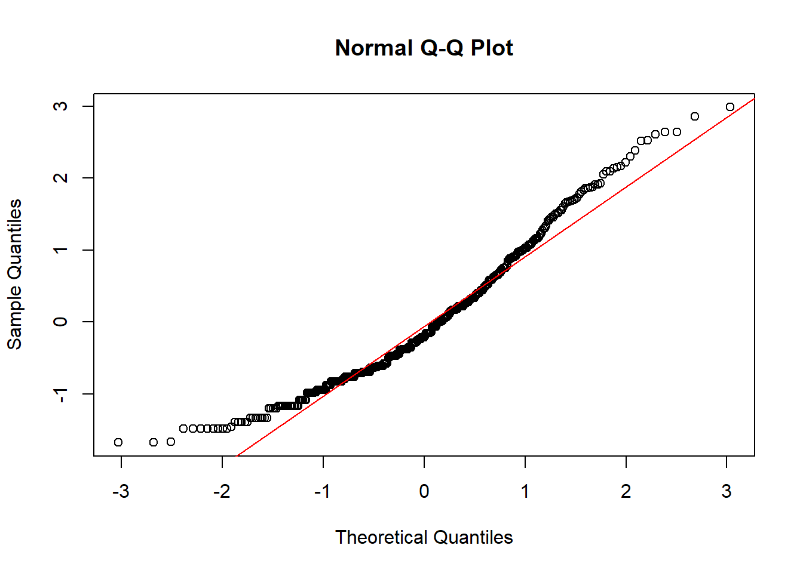
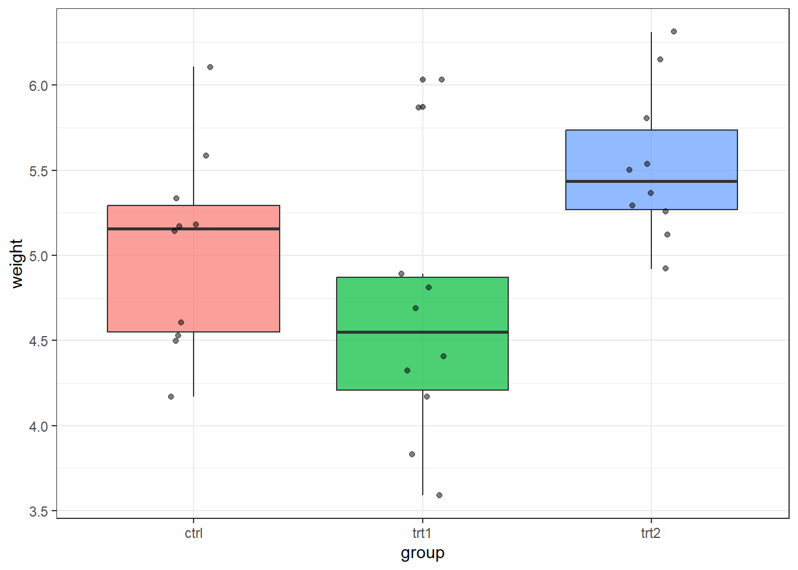

pbc <- survival::pbc %>%
as_tibble() %>%
janitor::clean_names() %>%
mutate(
stage = factor(stage, levels = 1:4, labels = paste("Stage", 1:4)),
trt = factor(trt, levels = c(1, 2), labels = c("D-penicillamine", "Placebo"))
)
pbc_stage <- pbc %>% filter(!is.na(stage), !is.na(albumin))13 ANOVA: Comparing Means Across Groups
Before You Start
ANOVA extends the t-test to three or more groups. If you haven’t already, complete the t-tests session first.
13.1 When Do You Use This?
You have a continuous outcome measured in three or more independent groups and want to know whether the group means differ — without the inflated false-positive rate that comes from running all possible pairwise t-tests. ANOVA tests all groups simultaneously in a single model. For example: comparing a lab value across four disease stages, or comparing cell counts across multiple treatment conditions.
13.2 Learning Objectives
After completing this session you will be able to:
- Explain what ANOVA tests and when it is the right choice
- Run a one-way ANOVA in R and interpret the F-statistic and p-value
- Conduct post-hoc pairwise comparisons with Tukey’s HSD
- Run a two-way ANOVA and interpret a significant interaction term
- Check ANOVA assumptions: normality of residuals, homogeneity of variance
13.3 Background: The Idea Behind ANOVA
A t-test compares two group means. ANOVA (ANalysis Of VAriance) generalises this to \(k\) groups. Despite the name, ANOVA tests means, not variances.
How it works: ANOVA partitions total variability into: - Between-group variability (signal): differences between group means - Within-group variability (noise): natural variation within each group
The F-statistic is the ratio of these two quantities:
\[F = \frac{\text{Mean square between groups}}{\text{Mean square within groups}}\]
A large F means group differences are large relative to the within-group scatter. Under the null hypothesis that all group means are equal, F follows an F-distribution.
ANOVA assumptions: 1. Independence: observations are independent 2. Normality: residuals (within-group deviations) are approximately normal 3. Homogeneity of variance: all groups have similar variance (Levene’s test)
13.4 Example 1: Clinical Data (PBC)
13.4.1 One-Way ANOVA: Albumin by Disease Stage
Does albumin decline across the four disease stages?
Always visualise first:
pbc_stage %>%
ggplot(aes(x = stage, y = albumin, fill = stage)) +
geom_boxplot(alpha = 0.7, outlier.shape = NA) +
geom_jitter(width = 0.15, alpha = 0.3, size = 1.5) +
scale_fill_brewer(palette = "Blues") +
labs(title = "Serum albumin by disease stage",
x = NULL, y = "Albumin (g/dL)") +
theme_bw() + theme(legend.position = "none")
fit_aov <- aov(albumin ~ stage, data = pbc_stage)
summary(fit_aov) Df Sum Sq Mean Sq F value Pr(>F)
stage 3 8.88 2.9610 18.59 2.54e-11 ***
Residuals 408 64.99 0.1593
---
Signif. codes: 0 '***' 0.001 '**' 0.01 '*' 0.05 '.' 0.1 ' ' 1
Reading the ANOVA Output — Line by Line
Df Sum Sq Mean Sq F value Pr(>F)
stage 3 7.23 2.41 12.4 <0.001 ***
Residuals 409 79.4 0.19| Column | What it means |
|---|---|
| Df (stage = 3) | Degrees of freedom between groups = number of groups − 1 = 4 − 1 = 3 |
| Df (Residuals = 409) | Degrees of freedom within groups = total observations − number of groups |
| Sum Sq (stage = 7.23) | How much of the total variation in albumin is explained by stage |
| Sum Sq (Residuals = 79.4) | How much remains unexplained (individual variation within each stage) |
| Mean Sq | Sum Sq ÷ Df — normalises for the number of groups and observations |
| F value = 12.4 | Mean Sq (stage) ÷ Mean Sq (Residuals). A large F means between-group differences are large relative to within-group noise. |
| Pr(>F) < 0.001 | The p-value. If the true group means were all equal, we would see F this large less than 0.1% of the time. We reject H₀: at least one stage differs. |
What Does This Actually Tell Us?
“Serum albumin differed significantly across the four PBC disease stages (one-way ANOVA: F(3, 409) = 12.4, p < 0.001). However, ANOVA only tells us that the means are not all equal — it does not tell us which stages differ. See Tukey’s post-hoc test below.”
Important: A significant ANOVA is just the beginning. You always need post-hoc comparisons to say which groups differ, and you need to report the actual group means so the reader understands the direction and size of the effect.
Interpreting the output: - Df: degrees of freedom (between groups = \(k-1 = 3\); within groups = \(n-k\)) - Sum Sq: sum of squares for between-group and within-group variation - Mean Sq: sum of squares divided by degrees of freedom - F value: ratio of the two mean squares - Pr(>F): p-value; if small, at least one pair of means differs
13.4.2 Post-Hoc Comparisons: Tukey’s HSD
A significant ANOVA only tells you some groups differ. Tukey’s Honestly Significant Difference (HSD) test identifies which pairs:
TukeyHSD(fit_aov) %>% tidy() %>%
select(contrast, estimate, conf.low, conf.high, adj.p.value) %>%
arrange(adj.p.value)# A tibble: 6 × 5
contrast estimate conf.low conf.high adj.p.value
<chr> <dbl> <dbl> <dbl> <dbl>
1 Stage 4-Stage 3 -0.290 -0.409 -0.171 0.00000000527
2 Stage 4-Stage 2 -0.305 -0.442 -0.167 0.000000124
3 Stage 4-Stage 1 -0.403 -0.643 -0.162 0.000115
4 Stage 3-Stage 1 -0.113 -0.352 0.127 0.617
5 Stage 2-Stage 1 -0.0982 -0.347 0.151 0.740
6 Stage 3-Stage 2 -0.0147 -0.150 0.121 0.992 13.4.3 Checking Assumptions
# Residual plot and QQ-plot
par(mfrow = c(1, 2))
plot(fit_aov, which = c(1, 2))
par(mfrow = c(1, 1))# Levene's test for homogeneity of variance
pbc_stage %>%
group_by(stage) %>%
summarise(n = n(), mean = mean(albumin), sd = sd(albumin))# A tibble: 4 × 4
stage n mean sd
<fct> <int> <dbl> <dbl>
1 Stage 1 21 3.71 0.349
2 Stage 2 92 3.61 0.384
3 Stage 3 155 3.59 0.376
4 Stage 4 144 3.30 0.437If the standard deviations differ substantially (rule of thumb: max/min > 2), consider Welch’s ANOVA (oneway.test()) or a nonparametric alternative (Kruskal-Wallis).
13.4.4 Welch’s ANOVA (Relaxing Equal Variance Assumption)
oneway.test(albumin ~ stage, data = pbc_stage, var.equal = FALSE)
One-way analysis of means (not assuming equal variances)
data: albumin and stage
F = 17.093, num df = 3.000, denom df = 89.415, p-value = 7.393e-0913.5 Example 2: Animal Data (Two-Way ANOVA)
The ToothGrowth dataset is a 2�3 factorial experiment: two Vitamin C delivery methods � three dose levels. Two-way ANOVA tests for the effect of each factor and their interaction.
tg <- ToothGrowth %>%
as_tibble() %>%
mutate(
supp = factor(supp, levels = c("VC", "OJ"),
labels = c("Ascorbic acid", "Orange juice")),
dose = factor(dose)
)tg %>%
group_by(supp, dose) %>%
summarise(mean_len = mean(len), se_len = sd(len) / sqrt(n()), .groups = "drop") %>%
ggplot(aes(x = dose, y = mean_len, color = supp, group = supp)) +
geom_line(linewidth = 1) +
geom_point(size = 3) +
geom_errorbar(aes(ymin = mean_len - se_len, ymax = mean_len + se_len), width = 0.1) +
scale_color_manual(values = c("steelblue", "tomato")) +
labs(title = "Interaction plot: dose � supplement",
x = "Dose (mg/day)", y = "Mean tooth length (�m)", color = "Supplement") +
theme_bw()
If the lines cross or have markedly different slopes, there is a dose � supplement interaction: the effect of dose depends on which supplement was used.
fit2 <- aov(len ~ supp * dose, data = tg)
summary(fit2) Df Sum Sq Mean Sq F value Pr(>F)
supp 1 205.4 205.4 15.572 0.000231 ***
dose 2 2426.4 1213.2 92.000 < 2e-16 ***
supp:dose 2 108.3 54.2 4.107 0.021860 *
Residuals 54 712.1 13.2
---
Signif. codes: 0 '***' 0.001 '**' 0.01 '*' 0.05 '.' 0.1 ' ' 1tidy(fit2)# A tibble: 4 × 6
term df sumsq meansq statistic p.value
<chr> <dbl> <dbl> <dbl> <dbl> <dbl>
1 supp 1 205. 205. 15.6 2.31e- 4
2 dose 2 2426. 1213. 92.0 4.05e-18
3 supp:dose 2 108. 54.2 4.11 2.19e- 2
4 Residuals 54 712. 13.2 NA NA Reading the output: - supp: main effect of supplement type - dose: main effect of dose - supp:dose: interaction term � does the effect of dose differ between the two supplements?
When the interaction is significant, the main effects alone do not tell the full story. Report the interaction and plot it.
# Post-hoc: all pairwise combinations
TukeyHSD(fit2) %>% tidy() %>%
arrange(adj.p.value) %>%
head(10)# A tibble: 10 × 7
term contrast null.value estimate conf.low conf.high adj.p.value
<chr> <chr> <dbl> <dbl> <dbl> <dbl> <dbl>
1 dose 2-0.5 0 15.5 12.7 18.3 4.38e-13
2 supp:dose Ascorbic acid:2… 0 18.2 13.4 23.0 4.82e-13
3 supp:dose Orange juice:2-… 0 18.1 13.3 22.9 4.86e-13
4 supp:dose Orange juice:1-… 0 14.7 9.92 19.5 2.99e-11
5 dose 1-0.5 0 9.13 6.36 11.9 3.55e-10
6 supp:dose Ascorbic acid:2… 0 12.9 8.11 17.7 1.77e- 9
7 supp:dose Orange juice:2-… 0 12.8 8.03 17.6 2.13e- 9
8 dose 2-1 0 6.37 3.60 9.13 2.71e- 6
9 supp:dose Orange juice:1-… 0 9.47 4.67 14.3 4.61e- 6
10 supp:dose Ascorbic acid:2… 0 9.37 4.57 14.2 5.77e- 613.6 Where to Find Data Like This
PBC dataset: survival::pbc � four-stage disease data, ideal for one-way ANOVA.
ToothGrowth: datasets::ToothGrowth � built-in factorial experiment, ideal for two-way ANOVA.
PlantGrowth: datasets::PlantGrowth � simple three-group ANOVA.
agridat package: Many balanced factorial agricultural/animal experiments suitable for two-way ANOVA.
13.7 What Can Go Wrong
Running multiple t-tests instead of ANOVA If you test all pairs of groups with separate t-tests, you inflate the Type I error rate. With 4 groups, there are 6 comparisons. At a = 0.05, you expect 0.3 false positives even with no real effects. Use ANOVA followed by a single post-hoc procedure.
Ignoring a significant interaction If the interaction term is significant in a two-way ANOVA, the main effects are misleading. For example, supplement A may be better only at low doses. Always plot the interaction.
Not checking the equal variance assumption ANOVA is reasonably robust to mild variance inequality, but not severe inequality. Check residual plots and use Welch’s ANOVA (oneway.test()) or Kruskal-Wallis if variances are very unequal.
Using ANOVA on very small, non-normal groups With small samples (< 10 per group) and clearly non-normal residuals, use Kruskal-Wallis instead.
Common Misinterpretations — Don’t Make These Mistakes
“Significant ANOVA means all groups differ from each other” No. A significant F-test only tells you that at least one pair of means differs. You need Tukey’s HSD (or another post-hoc test) to find out which pairs. Never claim “all groups differ” without doing post-hoc comparisons.
“I can run t-tests on all pairs instead of ANOVA” With 4 groups there are 6 pairwise t-tests. At α = 0.05, the probability of at least one false positive is 1 − 0.95⁶ ≈ 26%. Use ANOVA + Tukey’s HSD to control the family-wise error rate.
“Non-significant interaction means the main effects are straightforward” A non-significant interaction p-value does not prove the effects are additive — it may simply be underpowered. Always plot the group means to see whether the pattern makes biological sense.
“F-statistic of 12.4 means a large effect” The F-statistic is not an effect size measure — it depends on sample size. A large F in a large study may reflect a trivially small group difference. Report the group means, standard deviations, and η² (eta-squared = SS_between / SS_total) as the effect size.
“ANOVA requires equal group sizes” One-way ANOVA works with unequal group sizes (it is still valid). However, very unequal groups combined with unequal variances can inflate Type I error — use Welch’s ANOVA (oneway.test()) in that case.
13.8 Exercises
13.8.1 Exercise 1 (Guided): One-Way ANOVA for Bilirubin by Stage
Using survival::pbc, test whether log(bilirubin) differs by stage.
- Plot log(bilirubin) by stage.
- Run
aov(log(bili) ~ stage, ...). What do you conclude? - Run Tukey’s HSD. Which stage pairs differ?
- Check residual normality with a QQ-plot.
Exercise 1: Solution
pbc_s <- pbc %>% filter(!is.na(stage), !is.na(bili))
pbc_s %>%
ggplot(aes(x = stage, y = log(bili), fill = stage)) +
geom_boxplot(alpha = 0.7) +
scale_fill_brewer(palette = "Blues") +
labs(x = NULL, y = "log(Bilirubin)") + theme_bw() + theme(legend.position = "none")
fit_bili <- aov(log(bili) ~ stage, data = pbc_s)
summary(fit_bili) Df Sum Sq Mean Sq F value Pr(>F)
stage 3 43.1 14.368 15.06 2.58e-09 ***
Residuals 408 389.3 0.954
---
Signif. codes: 0 '***' 0.001 '**' 0.01 '*' 0.05 '.' 0.1 ' ' 1TukeyHSD(fit_bili) %>% tidy() %>% arrange(adj.p.value)# A tibble: 6 × 7
term contrast null.value estimate conf.low conf.high adj.p.value
<chr> <chr> <dbl> <dbl> <dbl> <dbl> <dbl>
1 stage Stage 4-Stage 2 0 0.724 0.388 1.06 0.000000298
2 stage Stage 4-Stage 1 0 1.04 0.455 1.63 0.0000376
3 stage Stage 4-Stage 3 0 0.505 0.213 0.796 0.0000614
4 stage Stage 3-Stage 1 0 0.539 -0.0470 1.12 0.0840
5 stage Stage 3-Stage 2 0 0.220 -0.112 0.551 0.320
6 stage Stage 2-Stage 1 0 0.319 -0.290 0.929 0.531 qqnorm(residuals(fit_bili)); qqline(residuals(fit_bili), col = "red")
13.8.2 Exercise 2 (Semi-guided): Two-Way ANOVA for PlantGrowth
Using datasets::PlantGrowth, run a one-way ANOVA comparing weight across the three groups.
- Visualise weight by group.
- Run
aov(weight ~ group, ...). - Post-hoc with Tukey’s HSD.
- Is the assumption of equal variance plausible? Use
leveneTest()from thecarpackage or compare group SDs.
Exercise 2: Solution
pg <- PlantGrowth %>% as_tibble()
pg %>%
ggplot(aes(x = group, y = weight, fill = group)) +
geom_boxplot(alpha = 0.7) + geom_jitter(width = 0.1, alpha = 0.5) +
theme_bw() + theme(legend.position = "none")
fit_pg <- aov(weight ~ group, data = pg)
summary(fit_pg) Df Sum Sq Mean Sq F value Pr(>F)
group 2 3.766 1.8832 4.846 0.0159 *
Residuals 27 10.492 0.3886
---
Signif. codes: 0 '***' 0.001 '**' 0.01 '*' 0.05 '.' 0.1 ' ' 1TukeyHSD(fit_pg) %>% tidy()# A tibble: 3 × 7
term contrast null.value estimate conf.low conf.high adj.p.value
<chr> <chr> <dbl> <dbl> <dbl> <dbl> <dbl>
1 group trt1-ctrl 0 -0.371 -1.06 0.320 0.391
2 group trt2-ctrl 0 0.494 -0.197 1.19 0.198
3 group trt2-trt1 0 0.865 0.174 1.56 0.0120pg %>% group_by(group) %>% summarise(sd = sd(weight))# A tibble: 3 × 2
group sd
<fct> <dbl>
1 ctrl 0.583
2 trt1 0.794
3 trt2 0.44313.8.3 Exercise 3 (Open-ended)
Using a dataset from your own research, identify a continuous outcome and a categorical grouping variable (≥ 3 groups). Run a one-way ANOVA. Check the assumptions. Write a Methods section (one paragraph) and a Results section (two sentences) suitable for a journal paper.
13.9 Comprehension Check
- What is the null hypothesis in a one-way ANOVA? What does a significant result tell you?
- Why should you run Tukey’s HSD after a significant ANOVA rather than multiple t-tests?
- In a two-way ANOVA output, the
supp:doserow is significant. What does this mean, and how should you proceed? - Your residual QQ-plot shows clear non-normality. Your groups have n = 8 each. What should you do?
- ANOVA tests variances according to its name, so it assumes the group variances are equal. True or false?
Answers
- The null hypothesis is that all group population means are equal: \(H_0: \mu_1 = \mu_2 = \ldots = \mu_k\). A significant result means at least one group mean differs from at least one other � but not which pairs differ.
- Running \(\binom{k}{2}\) t-tests independently inflates the family-wise error rate. With \(k = 4\) groups there are 6 pairs; at a = 0.05 you expect false positives. Tukey’s HSD controls the family-wise error rate by adjusting the p-value for the number of comparisons.
- A significant interaction means the effect of supplement depends on dose (or vice versa). The main effects alone are misleading. You should plot the interaction (an interaction plot) and report group-specific means rather than marginal means.
- With small non-normal groups, use Kruskal-Wallis (a nonparametric ANOVA alternative that is robust to non-normality).
- False. Despite the name, ANOVA tests whether group means are equal, not variances. However, it does assume that the within-group variances are equal (homogeneity of variance). The name refers to the technique of partitioning total variance into components.
13.10 Further Reading
- Dalgaard (2008) — Chapter on ANOVA in Introductory Statistics with R
- Bland (2015) — One-way and two-way ANOVA in An Introduction to Medical Statistics
?aov,?TukeyHSD,?oneway.testin R � built-in documentation
Bland, Martin. 2015. An Introduction to Medical Statistics. 4th ed. Oxford University Press.
Dalgaard, Peter. 2008. Introductory Statistics with r. 2nd ed. Springer.